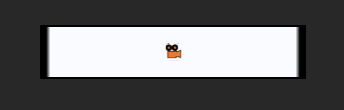
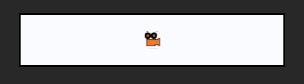
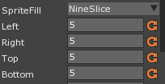
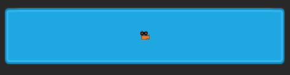

Area Component
This lesson explains the basics of using the Area Component.
Learning Objectives
- Understand the uses and applications of the Area component
- Receive an introduction to Nine-Slice scaling and Tiling
| Vocabulary | |
|---|---|
| Frame Based Movement | Time Based Movement |
| KeyboardEvent | Mouse Event |
Create a New Project
Level Setup
Create the Test Sprite
- Command :
CreateSpriteor - Select the Sprite you created
- In the Properties Window
- Set name to: AreaTest
- Under Transform
- Set Scale to:
[5, 1, 1]
- Set Scale to:
- Under Sprite
- Set SpriteSource to:
SquareBordered
- Set SpriteSource to:

Why Area?
Notice that the edges of the sprite are all blurry. How can we fix that?
In the Properties Window
Under Transform
- Reset Scale to: [1, 1, 1]
Under Area
- Set Size to: [5, 1]
Here is what it will look like

First note that Area’s Size unlike scale will not be inherited by children.
Now the edges are nice on our sprite. This is because the default Square sprite already has feature know as nine slice scaling enabled.
Here is how it works.

Adding Your Own Nine Sliced Sprite
Download the
Basic UIpackage from The Void.Import a Nine Slice ready sprite (any button sprite will do).
Find the sprite in the library and edit it
In Sprite Editor Window
- Set the mode to nine slice
- Change the Left, Right, Top, and Bottom to 5,5,5,5

Select this sprite on your object

Tiling Mode
Sprites can also be tiled by the Area component
Download the
VD1_TilableBackgroundpackage from The Void.Import a tilable sprite to your project.
Find the sprite in the library
In Sprite Editor Window
- Set the mode to Tiled
Command :
CreateSpriteorIn the Properties Window
Set the sprite to tiled background
Under Area
- Set Size to: [200, 200]
{kind=link}